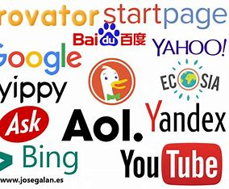
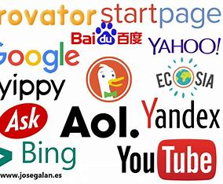

puede haber buscadores generales como: google, Yahoo o Bing o buscadores específicos como puede ser youtube entre otros
buscadores de internet
tipos de buscadores

Obra publicada con Licencia Creative Commons Reconocimiento Compartir igual 4.0
puede haber buscadores generales como: google, Yahoo o Bing o buscadores específicos como puede ser youtube entre otros

Obra publicada con Licencia Creative Commons Reconocimiento Compartir igual 4.0